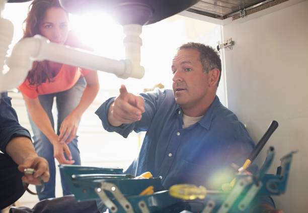

Looking for top plumbing repair in Columbiana Ohio ? We offer fast, efficient fixes for leaks, drains, and more. Trusted professionals with years of experience. Get your plumbing problem solved now.
Click Here To Call Us (877) 848-1711Welcome to Dive Plumbing Repair, your trusted partner for expert plumbing repair in Columbiana Ohio . Our company specializes in delivering reliable and efficient plumbing solutions tailored to meet all your needs. Whether you're dealing with a leaky faucet, a clogged drain, or a major plumbing emergency, our team of skilled professionals is here to provide top-notch service.
At Dive Plumbing Repair, we offer a comprehensive range of plumbing repair services in Columbiana Ohio . From minor leaks to complex pipe repairs, we use advanced techniques and high-quality materials to ensure long-lasting results. Our experienced plumbers are equipped with the latest tools and technology to diagnose and resolve issues swiftly, minimizing any disruption to your home or business.
We take pride in our commitment to customer satisfaction. Dive Plumbing Repair offers transparent pricing, reliable service, and a guarantee of excellence in every job we undertake. Our team is dedicated to providing you with the best plumbing solutions, tailored specifically to your needs.
If you’re looking for dependable plumbing repair in Columbiana Ohio Dive Plumbing Repair is your go-to solution. Contact us today to schedule a service or learn more about how we can assist with your plumbing needs. Trust Dive Plumbing Repair for all your plumbing repairs and experience the difference of working with the best in Columbiana Ohio .
Residential & commercial Plumbing repair
Quality services at affordable prices
Immediate 24/ 7 emergency services


Save Time, Money, and Avoid Disruptions with Trenchless Pipe Lining in Columbiana Ohio
At Health Pro Insulation Services, we understand that dealing with pipe issues can be stressful and disruptive. That’s why we offer trenchless pipe lining solutions across Columbiana Ohio to provide you with a fast, cost-effective, and minimally invasive way to repair your pipes.
Trenchless pipe lining is a cutting-edge technology designed to repair existing pipelines without the need for extensive excavation. This innovative method involves inserting a flexible liner into the damaged pipe, which is then cured to form a new, durable pipe within the old one. By avoiding traditional digging, trenchless pipe lining minimizes damage to your landscape, driveway, and existing structures.
The benefits of trenchless pipe lining are immense. Firstly, it saves you time—repairs can often be completed in a fraction of the time required for traditional methods. This efficiency not only reduces labor costs but also limits the disruption to your daily routine. Additionally, because it’s less invasive, you save money on potential restoration and landscaping expenses.
Health Pro Insulation Services is committed to providing top-notch trenchless pipe lining services that enhance the longevity and functionality of your pipes. With our expert team and state-of-the-art equipment, we ensure a seamless, stress-free experience from start to finish. Trust us to handle your pipe repairs efficiently, so you can enjoy peace of mind and uninterrupted service in Columbiana Ohio .
Residential & commercial Plumbing repair
Quality services at affordable prices
Immediate 24/ 7 emergency services
A damaged water main can lead to significant water loss and expensive utility bills. Our water main repair services are engineered to handle both residential and commercial needs, ensuring your water supply remains uninterrupted. Our technicians are experienced in all facets of water main repairs, from minor leaks to complete replacements, and they utilize the latest technology to detect problems without damaging your landscaping or property.
Prompt response times are part of our commitments; we understand that water main issues require immediate attention to avoid extensive damage. By choosing our services, you ensure the swift restoration of your water service and access to professionals who prioritize your satisfaction and well-being, making us your trusted choice .

Your plumbing system is complex, and over time, it can face various challenges. Our plumbing system repair services cover a comprehensive range of issues, ensuring that every aspect of your plumbing is thoroughly examined and repaired accordingly. Our knowledgeable plumbers use their expertise to address issues efficiently, maintaining the integrity of your entire system.
We take a proactive approach, identifying potential problems before they escalate. Our commitment to high-quality repairs and customer satisfaction ensures that you receive effective solutions tailored to your property's unique plumbing needs. When you choose us for plumbing system repairs, you're opting for reliability and quality service .

A well-functioning kitchen is essential for any home. Our kitchen plumbing repair services in Columbiana Ohio address issues such as leaky faucets, broken garbage disposals, and clogged sinks, ensuring that your kitchen remains the heart of your home.
Why should you choose us for your kitchen plumbing repair needs? Our specialized technicians bring a wealth of experience to every job. We take pride in our attention to detail and our commitment to quality, ensuring every repair is done right. We also understand the importance of your kitchen in your daily life, which is why we work efficiently to minimize disruption. Count on us for professional kitchen plumbing repairs that keep your kitchen running smoothly.

The kitchen is the heart of the home, and plumbing issues can halt its functionality. At Plumbing repair, we offer specialized kitchen plumbing repair services that cater to all aspects of your kitchen’s plumbing system. From leaky sinks to malfunctioning garbage disposals, our experienced plumbers are equipped with the tools and expertise to handle any kitchen plumbing challenge. We focus on providing solid, reliable solutions while emphasizing customer satisfaction and transparent pricing. Trust us to restore the functionality of your kitchen so you can get back to cooking and enjoying your time at home.

The bathroom is a critical area in any home, and no one enjoys dealing with plumbing problems there. At Plumbing repair, we provide bathroom plumbing repair services in Columbiana Ohio with a focus on efficiency and quality. Our skilled technicians are adept at resolving a wide range of issues, including leaky faucets, clogged drains, and toilet malfunctions. We understand the urgency of bathroom repairs and prioritize quick response times without compromising on quality. When you choose us, you’re selecting a trusted provider with a proven track record of customer satisfaction. Experience a shower of relief—choose us for all your bathroom plumbing needs.
When you need plumbing repairs, the last thing you want is to be surprised by the costs. Our plumbing repair estimates are designed to provide you with a clear understanding of what to expect regarding pricing and services.
Why choose us for your estimates? Our estimates are comprehensive and honest; we provide detailed breakdowns of the work needed and associated costs. Our goal is to ensure transparency and build trust with our clients. We don’t believe in hidden fees or surprises; you’ll know exactly what you’re getting. Our focus on customer satisfaction means you can expect a trustworthy and reliable estimate process from start to finish.

Drain issues can cause significant inconvenience, but they shouldn't be financially burdensome. Our affordable drain repair services are designed to help you keep your plumbing system functioning properly without breaking the bank.
Why choose us for affordable drain repairs? We pride ourselves on offering competitive pricing while maintaining the highest quality of service. Our experienced technicians provide thorough inspections and effective repairs that ensure your drains work smoothly. We also focus on preventive measures to help you avoid costly repairs in the future. With us, you can expect quality service that fits your budget and meets your plumbing needs efficiently.

Plumbing fixtures are vital components of your plumbing system, and when they malfunction, it can greatly affect your daily routine. At Plumbing repair, we offer comprehensive plumbing fixture repair services to ensure your sinks, toilets, showers, and faucets function properly. Our expert plumbers have the tools and knowledge to address leaks, malfunctions, and inefficiencies quickly and effectively. We take pride in delivering top-notch customer service, transparent pricing, and quality repairs. Trust us to restore your plumbing fixtures to optimal condition, ensuring the comfort and functionality of your home.
Years Experience
Expert Technicians
Satisfied Clients
Compleate Projects
At Dive Plumbing Repair, we take pride in delivering top-notch plumbing solutions to residents of Columbiana Ohio . Our commitment to excellence sets us apart as the leading plumbing service provider in the city and surrounding areas. Here’s why you should choose us for all your plumbing needs.
Expertise You Can Trust
With years of industry experience, our certified plumbers bring unparalleled expertise to every job. Whether it’s a leaky faucet, a clogged drain, or a complex installation, our team handles each task with precision and care. Our extensive knowledge ensures that we address both common and intricate plumbing issues efficiently.
Reliable and Prompt Service
We understand that plumbing emergencies can happen anytime, which is why we offer prompt and reliable services. Our team is available 24/7 to tackle urgent repairs, ensuring that you’re never left dealing with a plumbing problem on your own. We prioritize your needs and strive to provide quick, effective solutions.
Customer Satisfaction Guaranteed
Customer satisfaction is at the heart of everything we do. From the moment you contact us, you’ll experience our dedication to exceptional service. We listen to your concerns, offer transparent pricing, and work diligently to exceed your expectations. Our goal is to leave you completely satisfied with our work.
Affordable Solutions
At Dive Plumbing Repair, we believe in providing high-quality service at competitive rates. We offer upfront pricing with no hidden fees, so you can trust that you’re getting the best value for your money. Our affordable solutions ensure that you receive top-tier plumbing services without breaking the bank.
Choose Dive Plumbing Repair in Columbiana Ohio for unparalleled expertise, reliable service, and unbeatable customer satisfaction. Contact us today to schedule your plumbing repair or maintenance needs!
In today's world, ensuring your home's plumbing system operates smoothly is paramount for comfort and convenience. Our residential plumbing repair services in Columbiana Ohio offer homeowners peace of mind. We specialize in fixing leaks, repairing faucets, unclogging drains, and addressing any plumbing issue that may arise. Our experienced technicians utilize state-of-the-art tools and techniques to diagnose problems quickly and effectively, ensuring minimal disruption to your daily life.
Why should you choose us for your residential plumbing needs? We pride ourselves on providing trustworthy, prompt, and professional service. With our transparent pricing model, you’ll never be hit with unexpected costs. Customer satisfaction is at the forefront of our mission, and our numerous positive customer reviews stand as a testament to our commitment to excellence. Choose us for reliable residential plumbing repairs that keep your home functional and comfortable.
Plumbing emergencies can happen at any time, day or night. That’s why at Plumbing repair, we offer 24/7 emergency plumbing repair services . Our skilled plumbers are always on standby to address any urgent issues, such as burst pipes, overflowing toilets, or severe leaks, ensuring that we mitigate damage and restore order swiftly. With our state-of-the-art equipment and extensive experience in emergency situations, we promise quick and effective solutions. What sets us apart? Our team is dedicated to providing stellar service, transparent pricing, and guaranteed satisfaction. You can count on us to be your reliable plumbing partner in times of need.
Plumbing emergencies can strike at any time, and when they do, you need a trusted partner who can respond immediately. Our emergency plumbing repair services are available 24/7 to address any urgent issue, from burst pipes to sewer backups. We understand that plumbing emergencies can lead to significant damage, which is why our team is always ready to tackle the problem quickly and efficiently.
Why choose us for your emergency repairs? We take pride in our fast response times and professional service. Our experienced plumbers are equipped with the latest tools and technology, allowing them to diagnose and resolve emergencies effectively. Our commitment to customer service ensures that you will receive the highest quality care, even in the most stressful situations. With us, you can rest assured that your plumbing problems will be resolved swiftly, helping to minimize damage and restore your peace of mind.
Quality plumbing repair shouldn’t break the bank. Our affordable plumbing repair services are designed for homeowners and businesses alike, ensuring that everyone has access to reliable and professional plumbing solutions. We offer upfront pricing and various service packages to accommodate your needs and budget.
Why are we the best when it comes to affordable plumbing repairs? We believe that great service shouldn’t come with a high price tag. Our team of skilled technicians provides top-notch repairs without hidden fees or surprises. By choosing us, you are not only ensuring quality service but also saving money in the long run with our efficient solutions that prevent future issues. Trust us to deliver affordability paired with professionalism, ensuring every repair is done right the first time.
Plumbing issues don’t follow a schedule, which is why our 24-hour plumbing repair service is always at your service! Whether it's a late-night leak or an early morning emergency, our team is available around the clock to address your plumbing concerns, providing you with instant solutions.
Why choose our 24-hour service? Our licensed plumbers are available 24/7 because we understand that plumbing issues require immediate attention. We pride ourselves on our commitment to customer service and our swift response times. Our technicians have the training and experience to handle any situation, ensuring you have the expert assistance you need, no matter the time of day. With us, you can trust that help is just a phone call away, any hour of the day or night.
Plumbing issues don’t adhere to a schedule, and when they arise, you need a dependable solution immediately. At Plumbing repair, our 24-hour plumbing repair services in Columbiana Ohio are designed to provide peace of mind. Our dedicated team is available day and night to tackle emergencies, leaks, clogged drains, and more. Our rapid response times and commitment to quality mean we will restore your plumbing efficiently, regardless of the hour. We pride ourselves on being the best in the business, with a reputation built on excellence and customer satisfaction. When you need us, we’ll be there, ready to help.
When searching for the best plumbing repair companies look no further than Plumbing repair. Our unwavering commitment to excellence, reliability, and customer satisfaction sets us apart from the rest. We employ highly trained, licensed plumbers who utilize state-of-the-art technology and techniques to deliver superior plumbing repair services. Our extensive range of plumbing solutions means we can handle everything from minor repairs to major installations. Discover why countless Columbiana Ohio residents and businesses trust us for their plumbing needs. Choose us for our commitment to quality, integrity, and outstanding customer service.
Our local plumbing repair services in Columbiana Ohio are designed with your needs in mind. Being a local company allows us to foster meaningful relationships with our community, ensuring that we understand the specific plumbing challenges faced by residents and businesses in the area. Our commitment to personalized service means our technicians are not just familiar with pipes and fixtures; they also know your neighborhood and the common installation and repair issues that may arise.
We strive to provide prompt service, often being able to address plumbing needs on the same day. With our transparent pricing structure, you'll know exactly what to expect with every repair or installation. When you choose us, you choose reliable, local professionals dedicated to providing top-notch plumbing services tailored to Columbiana Ohio .
damaged pipes can lead to significant water waste and property damage if not handled promptly. Our plumbing pipe repair services in Columbiana Ohio focus on detecting leaks, corroded pipes, and burst sections effectively. Using advanced technology, our experienced plumbers accurately diagnose and repair any issues, ensuring your plumbing system remains efficient and long-lasting. Choose us to ensure your plumbing infrastructure is robust, reliable, and well-maintained.
A dripping faucet may seem like a minor nuisance, but over time it can lead to significant water wastage and higher utility bills. Our faucet repair services are designed to resolve all types of faucet issues, restoring functionality and efficiency to your plumbing system.
We understand the intricacies of various faucet models and are equipped to handle both conventional and modern designs. Our experienced plumbers will quickly identify the source of the problem and perform effective repairs to ensure your faucets work flawlessly. By choosing our services, you not only save money on your water bills but also contribute to environmental conservation—making us your ideal plumbing solution in Columbiana Ohio .
Blocked or damaged drains can lead to serious plumbing issues. Our drain repair services in Columbiana Ohio are designed to address these problems head-on, utilizing advanced equipment to diagnose and repair blockages effectively.
Why choose our drain repair services? Our experienced technicians are trained in the latest drain cleaning techniques and technologies. We take pride in our thorough approach, providing comprehensive inspections to ensure all issues are identified and addressed. With our commitment to customer satisfaction and competitive pricing, we make drain repairs straightforward and hassle-free. When you choose us, you're investing in lasting solutions that protect your plumbing system.
Clogged or damaged drains can be a significant hassle for any homeowner or business. Our drain repair services are designed to quickly and effectively address these issues, ensuring a smooth and functioning plumbing system. With modern equipment such as video inspection tools, we accurately diagnose problems within your drainage system and provide effective solutions that restore functionality.
We employ eco-friendly methods where possible, prioritizing your health and safety while effectively clearing clogs. Our trained technicians are dedicated to providing you with exceptional service and long-term peace of mind. Choose us for your drain repair needs and discover why we are consistently rated as one of the top plumbing services .
Having reliable hot water is essential for comfort in both residential and commercial settings. Our water heater repair services in Columbiana Ohio address a wide range of issues, from a lack of hot water to strange noises or leaks in your system. Our team is well-versed in various types of water heaters, including tankless and traditional units.
We pride ourselves on our prompt service and thorough diagnostics, ensuring that we find the root cause of your water heater problem and resolve it effectively. Our expertise and commitment to customer satisfaction set us apart from others; we work diligently to restore your hot water access promptly, making us your best choice for water heater repair .
A malfunctioning sewer line can disrupt your daily activities and pose serious health risks. Our sewer line repair services are designed to handle all sewer issues, including blockages, backups, and leakages. Our specialists use advanced technology to inspect and diagnose sewer line problems accurately. Trust us to provide effective repairs that restore functionality and safety to your property’s plumbing system.
Leaks in your plumbing system can lead to extensive water damage and costly repairs if left unattended. Our pipe leak repair services are aimed at identifying and resolving leak issues quickly and effectively. Our experienced technicians utilize advanced leak detection technology to locate leaks hidden within walls, under floors, and even in your yard.
Once the source of the leak is located, we provide effective repairs designed to restore your plumbing system’s efficiency. By choosing us for your pipe leak repair needs, you gain access to professionals committed to minimizing damage to your property while ensuring long-lasting solutions. Trust us to protect your home and property from the adverse effects of leaks .
A burst pipe is a plumbing emergency that requires immediate professional intervention. Our burst pipe repair services in Columbiana Ohio are designed to quickly address this urgent issue, minimizing the damage to your property and restoring your water supply as quickly as possible. Our team of skilled plumbers is trained to handle such emergencies efficiently, ensuring that your pipes are repaired or replaced with minimal disruption.
We approach each emergency with urgency and care, using state-of-the-art equipment to perform repairs swiftly. Our track record of satisfied customers and consistently high ratings illustrate our commitment to reliable service. When you experience a burst pipe, choosing us means you are getting quick, effective, and quality repairs right away in Columbiana Ohio .
Gas line issues can pose serious safety risks, which is why our gas line repair services should never be taken lightly. Our qualified technicians ensure your gas lines are secure, safe, and compliant with all regulations. We conduct thorough inspections and perform necessary repairs quickly to address leaks or malfunctions. Safety is our priority, making us the best choice when it comes to handling gas line concerns.
Comprehensive Plumbing Solutions in Columbiana Ohio
At Health Pro Insulation Services, we pride ourselves on delivering top-notch plumbing solutions across all cities in Columbiana Ohio . Whether you're dealing with a minor leak or a major plumbing emergency, our team of licensed and experienced plumbers is here to provide prompt, professional, and reliable service.
Our comprehensive plumbing services cover everything from routine maintenance to complex repairs and installations. We understand that plumbing issues can disrupt your daily life, which is why we offer 24/7 emergency services to ensure that your problems are resolved swiftly and effectively. With our state-of-the-art equipment and cutting-edge techniques, we tackle all plumbing challenges with precision and efficiency.
We are committed to customer satisfaction and transparency, offering upfront pricing and detailed explanations of the work needed. Our team takes the time to assess your plumbing system thoroughly, identifying potential issues before they become costly problems. By choosing Health Pro Insulation Services, you benefit from our dedication to quality, integrity, and exceptional service.
Experience the difference of a professional plumbing service that goes above and beyond. Trust Health Pro Insulation Services for all your plumbing needs in Columbiana Ohio . Contact us today to schedule an appointment or for any urgent plumbing concerns. Let us help you maintain a smoothly running plumbing system with our reliable and expert solutions.
Columbiana is a city in northern Columbiana and southern Mahoning counties in the U.S. state of Ohio. The population was 6,559 at the 2020 census. It is part of the Salem micropolitan area and the Youngstown–Warren metropolitan area.
Yes, we offer trenchless repair options to fix sewer and water lines without the need for extensive digging .
Yes, we offer sewer line repair services, including inspections and trenchless repair options, for homes and businesses in Columbiana Ohio .
Low water pressure can be caused by pipe blockages, leaks, or problems with your water supply. We can diagnose and fix the issue .
Common signs include slow drains, low water pressure, leaks, and strange noises from your plumbing system. Contact us for an inspection .
Yes, we repair and replace sump pumps to protect your home from flooding and water damage .
Yes, we offer professional drain cleaning services to remove clogs and improve drainage in your home or office .
We offer a full range of plumbing services, including leak detection, drain cleaning, pipe repairs, water heater installation, and emergency plumbing .
Yes, we install and repair both traditional and tankless water heaters to ensure your home has reliable hot water .
If plunging doesn't work, contact Dive Plumbing Repair for professional unclogging and to prevent further damage .
Yes, we can diagnose and repair any issues causing low water pressure in your shower .
A running toilet is usually caused by a faulty flapper or fill valve. We can quickly repair this issue and reduce water waste in Columbiana Ohio .
Signs of a water leak include increased water bills, wet spots, and mold growth. We offer leak detection services to find hidden leaks .
Yes, we offer same-day and next-day services for urgent plumbing repairs .
The cost varies depending on the type of repair needed. We offer free estimates to give you a clear idea of the cost .
Most leaks can be repaired in just a few hours, but the time frame depends on the severity and location of the leak .
Reset the unit and check for jams. If the problem persists, we can repair or replace your garbage disposal .
Yes, we install and maintain backflow prevention systems to protect your water supply from contamination in Columbiana Ohio .
Yes, we specialize in fixing leaking faucets and other minor plumbing issues to prevent water waste .
Yes, Dive Plumbing Repair provides 24/7 emergency plumbing services for urgent issues like burst pipes and severe leaks in Columbiana Ohio .
Yes, we provide plumbing repair services for businesses, including restaurants, offices, and commercial buildings in Columbiana Ohio .
Yes, we can install sinks, faucets, toilets, and other plumbing fixtures to update your home in Columbiana Ohio .
We work with all types of piping materials, including copper, PVC, PEX, and cast iron .
Regular plumbing maintenance, fixing leaks, and installing water-efficient fixtures can help reduce your water bill .
We recommend annual plumbing inspections to catch issues early and ensure everything is working properly .
Yes, we provide repiping services to replace old, corroded pipes and improve your plumbing system's efficiency in Columbiana Ohio .
Yes, we install water softeners to help reduce hard water issues and extend the life of your plumbing fixtures in Columbiana Ohio .
Turn off the water supply and contact us immediately for water heater repair or replacement services .
Avoid putting grease, food particles, and hair down your drains. We also offer routine drain cleaning services to prevent clogs .
Insulate your pipes and keep your home heated during cold months to prevent freezing. We can also install freeze-proof solutions .
Yes, we are fully licensed and insured to provide professional plumbing repair services .
Dive Plumbing Repair provided outstanding service for our plumbing issue in Columbiana Ohio . Their team was professional and completed the job efficiently. Highly recommend them for any plumbing needs!
Profession
I had a leaky pipe that needed urgent attention. Dive Plumbing Repair in Columbiana Ohio did an outstanding job. Their expertise and quick response were impressive. Very satisfied with the results!
Profession
The service from Dive Plumbing Repair in Columbiana Ohio was excellent. They handled our plumbing issue with great expertise and care. I’m very pleased with the results and would recommend them!
Profession